BLCA · RNA-seq: contagens brutas (GDC)
STAR - Counts (GENCODE v36) · gerado em 21/10/2026 18:29
45,1 Mtamanho mediano
0,80dispersão mediana α
17.069genes
406amostras tumorais
19amostras normais
0,0%valores faltantes
Fonte: API do GDC (STAR - Counts)
Principais resultados
- Bibliotecas de 18,1 a 116,3 milhões de leituras (mediana 45,1). 43.391 de 60.660 features têm leitura em pelo menos 10% das amostras.
- A variância cresce bem acima da média: a dispersão mediana da binomial negativa é α=0.80 (para features com média > 10). Isso descarta um modelo Poisson e indica binomial negativa (ou Poisson-lognormal) na verossimilhança.
- A fração de zeros é compatível com a binomial negativa (diferença mediana -4,2%); inflação de zeros não parece necessária.
- Em média 9,5% das leituras de cada amostra vão para as 20 features mais abundantes (MT-CO1, MT-ND4, MT-RNR2).
- Genes codificadores de proteína recebem 97,2% das leituras (mediana).
- 17.069 genes medidos em 425 amostras (406 tumorais e 19 normais); 0,0% dos valores estão faltando.
- Os dois primeiros componentes principais explicam 20,5% e 9,8% da variância das features mais variáveis.
- Correlação mediana entre amostras: 0,52.
- Tumor x normal: 10471 genes diferentes com FDR < 5% (7084 maiores no tumor, 3387 maiores no normal; 19 pacientes têm o par tumor-normal).
- Mais aumentados no tumor: ENSG00000123500.10, ENSG00000170373.8, ENSG00000217275.2, ENSG00000276966.2, ENSG00000170369.4, ENSG00000111981.5, ENSG00000277224.2, ENSG00000204866.8.
- Mais reduzidos no tumor: ENSG00000179094.16, ENSG00000159713.11, ENSG00000197766.8, ENSG00000089486.17, ENSG00000196616.14, ENSG00000181804.15, ENSG00000169083.18, ENSG00000130558.20.
- Associações clínicas com p < 0,05 nos componentes principais: PC1 com estádio (p=1.1e-06); PC2 com estádio (p=0.0038); PC1 com sexo (p=0.014); PC2 com idade (p=0.0062); PC1 com sobrevida (p=0.0079).
Biblioteca
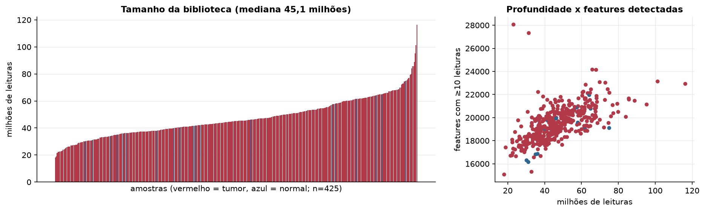
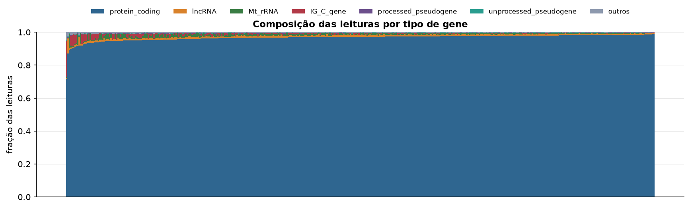
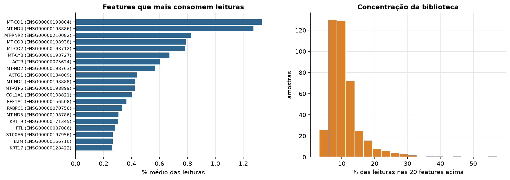
Sobredispersão e zeros
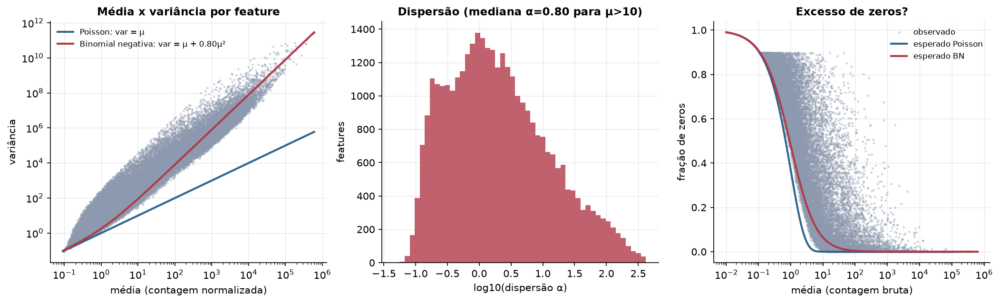
Exploração em log2(CPM+1)
Features com CPM ≥ 1 em pelo menos 20% das amostras (17.069 features).
Distribuição dos valores
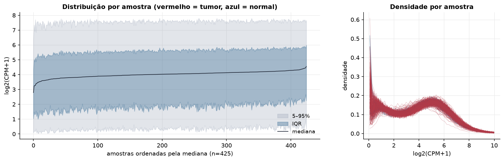
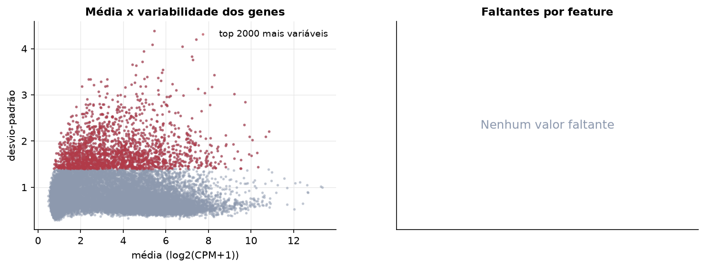
Estrutura das amostras
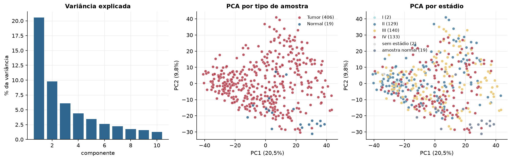
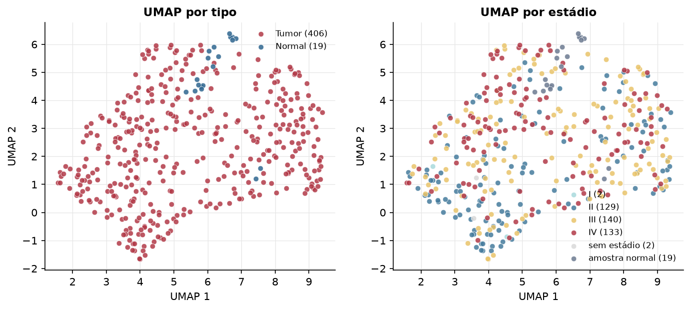
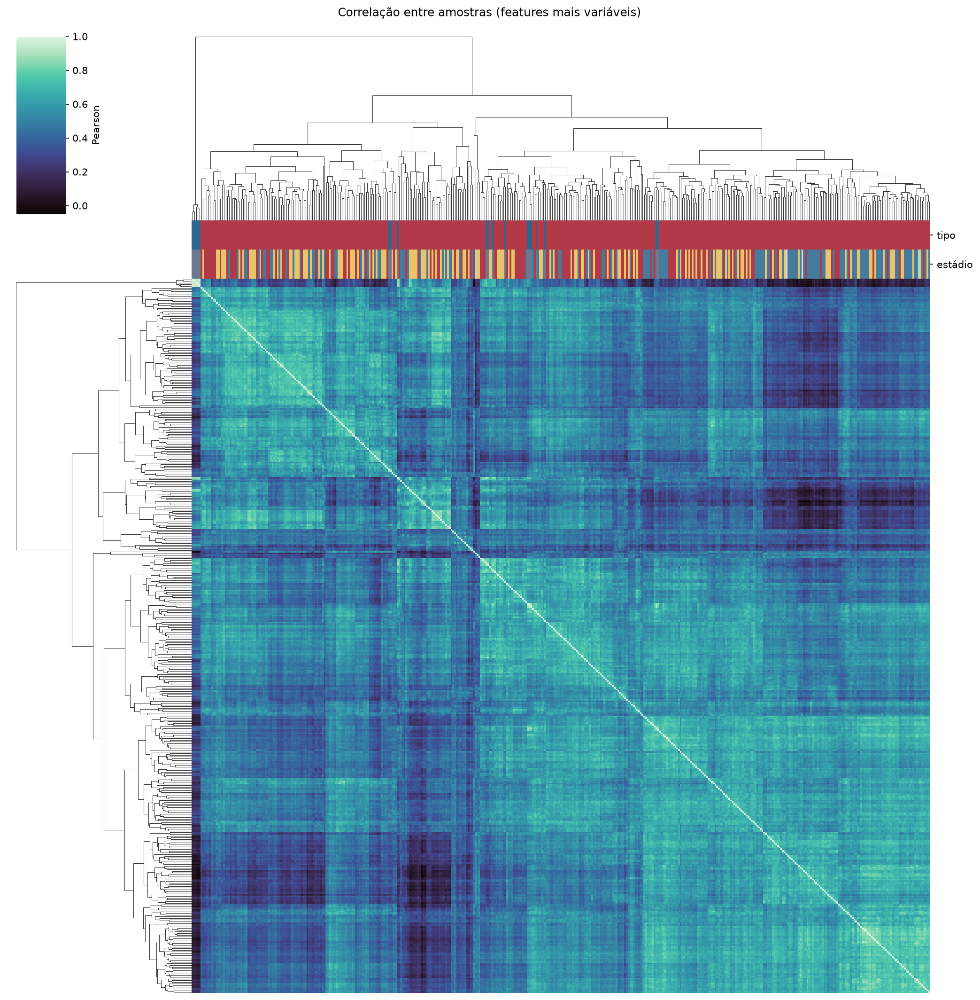
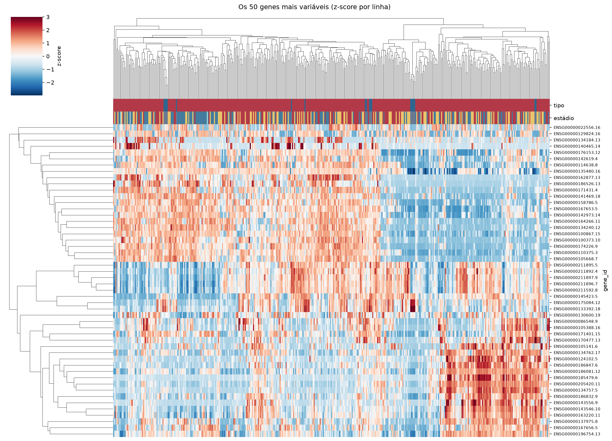
Tumor x normal
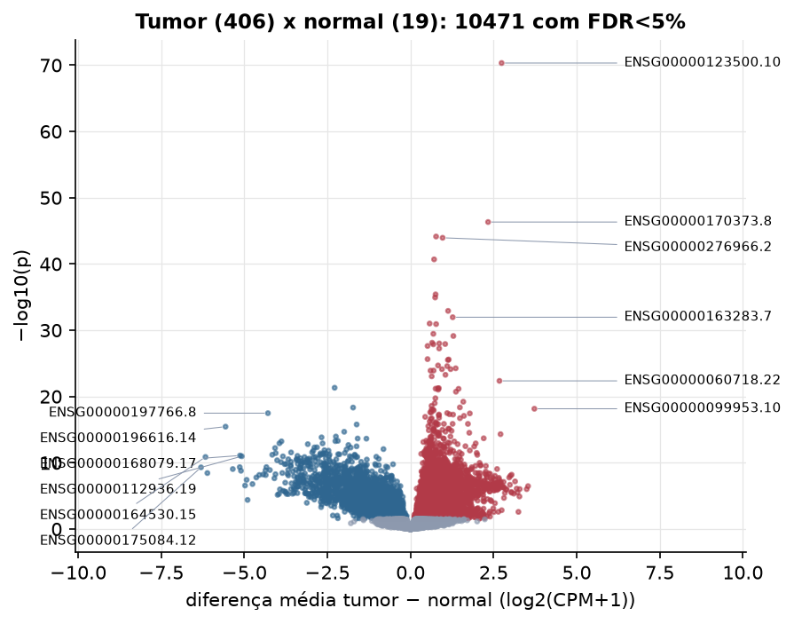
Features mais diferentes entre tumor e normal
| gene_id | diferenca_tumor_menos_normal | t | p | fdr |
|---|---|---|---|---|
| ENSG00000123500.10 | 2.741 | 22.229 | 4.74e-71 | 8.09e-67 |
| ENSG00000170373.8 | 2.334 | 18.356 | 4.71e-47 | 4.02e-43 |
| ENSG00000217275.2 | 0.769 | 16.844 | 7.22e-45 | 4.11e-41 |
| ENSG00000276966.2 | 0.965 | 17.084 | 1.12e-44 | 4.78e-41 |
| ENSG00000170369.4 | 0.71 | 15.08 | 2.02e-41 | 6.9e-38 |
| ENSG00000111981.5 | 0.754 | 15.997 | 3.9e-36 | 1.11e-32 |
| ENSG00000277224.2 | 0.741 | 14.869 | 1.15e-35 | 2.8e-32 |
| ENSG00000204866.8 | 1.131 | 13.607 | 1.2e-33 | 2.57e-30 |
| ENSG00000163283.7 | 1.27 | 13.095 | 1.09e-32 | 2.07e-29 |
| ENSG00000116032.5 | 0.575 | 15.285 | 9.79e-32 | 1.67e-28 |
| ENSG00000267123.7 | 0.77 | 14.246 | 1.18e-31 | 1.84e-28 |
| ENSG00000164778.4 | 0.687 | 12.984 | 3.5e-30 | 4.98e-27 |
| ENSG00000203814.6 | 1.289 | 17.488 | 7.41e-30 | 9.73e-27 |
| ENSG00000233818.1 | 0.65 | 15.826 | 7.66e-29 | 9.33e-26 |
| ENSG00000239893.2 | 0.864 | 12.657 | 9.89e-29 | 1.13e-25 |
| ENSG00000273328.5 | 1.044 | 12.723 | 1.21e-28 | 1.29e-25 |
| ENSG00000286058.1 | 0.687 | 12.24 | 1.36e-28 | 1.37e-25 |
| ENSG00000267751.5 | 0.513 | 14.05 | 2.37e-28 | 2.25e-25 |
| ENSG00000089116.4 | 0.863 | 14.394 | 5.63e-28 | 5.06e-25 |
| ENSG00000271662.1 | 0.513 | 15.234 | 2.29e-26 | 1.96e-23 |
| ENSG00000131668.14 | 1.149 | 12.264 | 2.66e-26 | 2.16e-23 |
| ENSG00000175294.6 | 1.125 | 13.919 | 3.08e-26 | 2.39e-23 |
| ENSG00000182632.15 | 0.829 | 11.629 | 2.07e-25 | 1.54e-22 |
| ENSG00000176383.9 | 1.104 | 16.431 | 2.61e-25 | 1.86e-22 |
| ENSG00000277075.2 | 1.359 | 16.774 | 5.57e-25 | 3.8e-22 |
| ENSG00000165685.8 | 1.206 | 12.889 | 7.44e-25 | 4.81e-22 |
| ENSG00000166143.10 | 0.946 | 11.506 | 7.61e-25 | 4.81e-22 |
| ENSG00000139800.8 | 0.695 | 11.449 | 1.22e-24 | 7.38e-22 |
| ENSG00000083782.8 | 0.602 | 10.925 | 1.25e-24 | 7.38e-22 |
| ENSG00000273983.1 | 1.05 | 14.727 | 5.34e-24 | 3.04e-21 |
Associação com variáveis clínicas
p-valores da associação dos três primeiros componentes principais (só tumores) com estádio (Kruskal-Wallis), sexo (Mann-Whitney), idade (Spearman) e sobrevida global (Cox univariado).
| estádio (Kruskal) | sexo (Mann-Whitney) | idade (Spearman) | sobrevida OS (Cox) | |
|---|---|---|---|---|
| PC1 (20,9%) | 1.08e-06 | 0.014 | 0.05 | 0.008 |
| PC2 (9,8%) | 0.004 | 0.684 | 0.006 | 0.621 |
| PC3 (5,5%) | 0.688 | 0.191 | 0.474 | 0.511 |